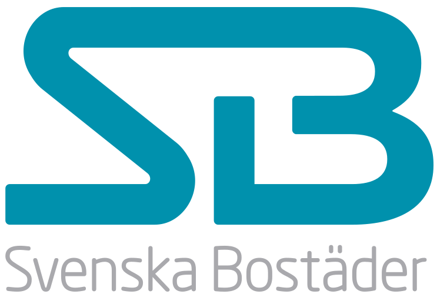

Certifierad Trygghet
Vi arbetar strikt enligt MCF:s regler och gällande skyddsrumskrav.
Skyddsrumsteknik
och certifiering
Certifierade skyddsrum och skyddsutrymmen. Vi tar er hela vägen från tidig planering och dimensionering till slutlig MCF-certifiering med kompromisslös säkerhetsfokus.
FÅ EN SÄKERHETSBEDÖMNING"Global Construction har varit en avgörande partner i flera av våra mest komplexa projekt. Deras tekniska kompetens och förmåga att leverera i tid ger oss full trygghet."

Från initial analys till färdiga produktionshandlingar.
Global Construction erbjuder expertis inom certifierade skyddsrum med en kompromisslös inställning till säkerhet och precision. Vi tar ansvar för hela kedjan – från projektering till färdigt skyddsrum.
Våra sakkunniga säkerställer att varje skyddsrum uppfyller MCF:s strikta krav. Vi optimerar konstruktionen för att ge maximalt skydd samtidigt som vi tar hänsyn till fastighetens fredsanvändning.
Teknisk Expertis
Djupgående kunskap om ventilation, täthet och strukturell bärighet.
Kompletta Handlingar
Vi tar fram allt från iordningställanderitningar till kontrollrapporter.
Några av våra samarbetspartners
Komplett trygghet för era skyddsrum i samarbete med branschens ledande aktörer.




Våra kärntjänster
Byggnation & renovering av skyddsrum för fastigheter och företag
Projektering av nybyggnation och renovering av skyddsrum i enlighet med MCF:s riktlinjer. Vi ser till att din fastighet är förberedd för kriser med trygga lösningar från planering till slutbesiktning.
LÄS MERIordningställanderitningar för skyddsrum enligt gällande krav
Vi skapar tydliga iordningställanderitningar för skyddsrum. En detaljerad handbok som beskriver hur ert skyddsrum snabbt och effektivt kan konverteras från fredsanvändning till full beredskap inom 48 timmar.
LÄS MERKvalificerad skyddsrumssakunnig för besiktning och certifiering
Våra certifierade sakkunniga utför avancerade besiktningar och bärighetsanalyser av skyddsrum för att garantera att de bibehåller strukturell integritet och möter MCF:s rigorösa säkerhetskrav.
LÄS MERNågra av våra projekt
Vanliga frågor kring byggkonstruktion
Beroende på projektets omfattning och komplexitet kan vi normalt sett få fram fackmannamässiga A- och K-ritningar inom 2 till 4 veckor från startmöte.
Ja, absolut. Vi arbetar ofta med äldre och kulturmärkta fastigheter och gör utredningar gällande nya bärande balksystem och avväxlingar vid större renoveringar.
Våra konstruktörer är specialister på både stål, platsgjuten och prefabricerad betong samt trä (inklusive avancerade limträ-konstruktioner).
Vid behov samarbetar vi rullande med oberoende geotekniker, vilket innebär att vi kan erbjuda exakta pålningsplaner och grundläggningskalkyler utifrån lokala markförhållanden.
Vi integrerar alltid strategiska miljöval genom hela projekteringsfasen, optimerar stål- och betongåtgång för att minimera CO2-avtrycket och uppfyller alltid ISO-kraven för hållbart byggande.
Självklart. Vi har behöriga kontrollansvariga som erbjuder oberoende övervakning genom hela entreprenaden för att säkerställa att branschkraven efterlevs punktligt.
Din trygga partner för certifierade skyddsrum
Kontakta oss direkt – vi återkommer inom 24 timmar.
KONTAKTA OSS